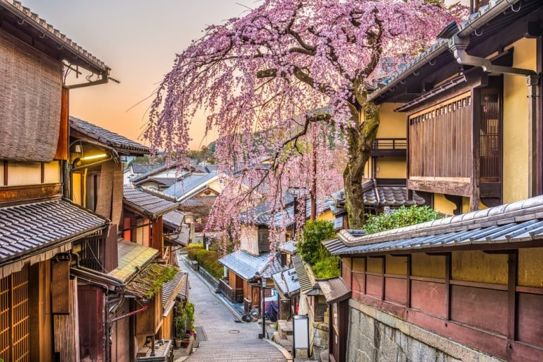

El viaje a través de Noruega fue una experiencia inolvidable. Las montañas escarpadas que se sumergen en aguas tranquilas y profundas crean un paisaje que parece sacado de un cuento de hadas. La primera parada fue en Geirangerfjord, un sitio declarado Patrimonio de la Humanidad por la UNESCO. Las rutas de senderismo son abundantes y ofrecen vistas espectaculares a cada paso.
Es crucial llevar buen calzado y estar preparado para cambios climáticos repentinos, incluso en verano, para disfrutar al máximo de la majestuosidad de la naturaleza noruega.
El encanto de los mercados de Kioto

El encanto de los mercados de Kioto
Kioto, la antigua capital imperial de Japón, es una ciudad que fusiona a la perfección la tradición con la modernidad. El mercado de Nishiki, conocido como "la cocina de Kioto", es un festín para los sentidos. Un pasillo estrecho lleno de puestos que venden de todo, desde encurtidos locales hasta marisco fresco y dulces tradicionales.
Pasear por el barrio de Gion al atardecer ofrece la posibilidad de ver a alguna geisha o maiko dirigiéndose a sus citas. Es un recordatorio viviente de la rica historia cultural de la ciudad.